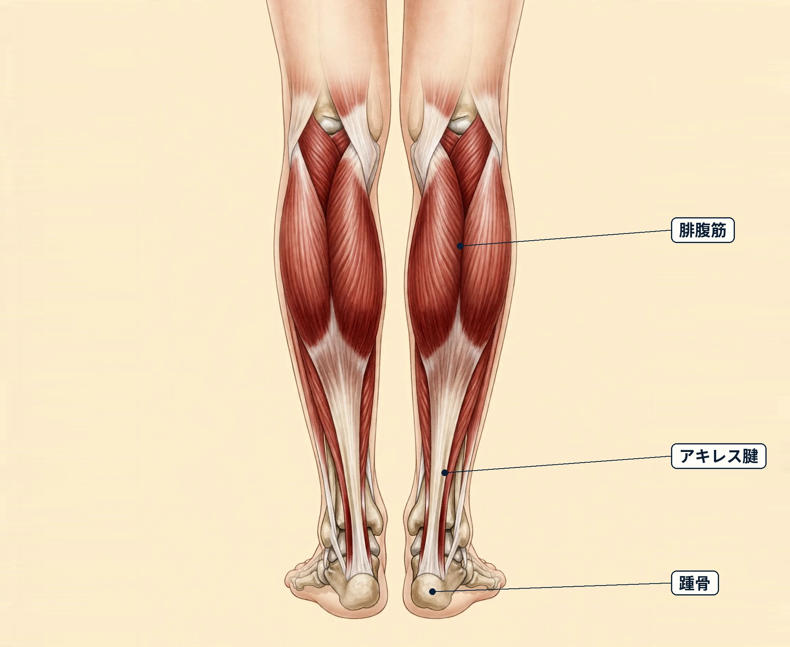

難波でクリスマスの買い物で歩き回った日に気になる足の疲れ｜荷物を持った日の過ごし方とセルフケア、受診の目安
１．クリスマスの買い物で歩き回った日の足の疲れとは ― 荷物を持った日に意識しやすい場面
「プレゼントを選びにデパートや商業施設をはしごして、気づけば夕方まで歩いていた」「買い物袋が増えていくうちに、足裏やふくらはぎまで重く感じる」「家に着いて靴を脱いだときに、足のだるさがどっと意識される」——クリスマスの買い物で歩き回った日に感じる足の疲れは、12月の買い物シーズンならではの場面で意識されやすいお悩みの一つです。ここでいう足の疲れは、足裏から足首、ふくらはぎにかけての重さやだるさ、張っている感じなどをまとめて表す日常的な言い方で、医学的な診断名ではありません。場面を問わない、歩いた後の足の疲れ全般については関連コラム「難波で歩いた後に気になる足の疲れ」でも整理していますが、この記事では「クリスマスの買い物で歩き回り、荷物を持った日」という場面に絞って整理します。難波はデパートや商業施設、商店街や地下街が集まり、店内をゆっくり眺めながら歩く時間、レジやギフトラッピングの順番を待つ時間、イルミネーションを見ながら歩く時間が重なりやすく、普段の買い物より歩く量も荷物の量も増えやすいエリアです。夕方に靴がきつく感じるようなむくみと重なって意識されることもあり、その場合は「難波で脚のむくみと冷えが気になる夜に」もあわせてご覧ください。感じ方や程度は人によってさまざまで、感じ方だけで、その背景を特定することはできません。この記事では、クリスマスの買い物で歩き回った日の足の疲れの一般的な解説、考えられる要因の例、買い物の日の過ごし方とセルフケア、そして先に医療機関へ相談したい目安を整理します。あくまで一般的な情報としてお読みください。
２．考えられる要因の整理
クリスマスの買い物で歩き回った日に足の疲れを感じやすくなる背景には、次のような買い物の日の過ごし方が関係している場合があります。
- 店をはしごする歩行距離と時間：プレゼント選びで複数の店舗やフロアを回るうちに、歩数や歩く時間が普段の買い物より増えやすく、足裏やふくらはぎへの負担が積み重なりやすいと言われます。
- 立ち止まる・並ぶ時間の長さ：商品を眺めながらゆっくり立つ時間や、レジ・ギフトラッピングの順番を待つ時間など、歩いていなくても立ち続ける時間が長いと、ふくらはぎまわりの重さを感じやすい方もいます。
- 少しずつ増えていく荷物の重さ：買い物が進むほど袋が増え、片手に寄せて持ち続ける日は、姿勢のバランスが変わり、足まわりへの負担と重なる方もいます。重い荷物ほど、その傾向が意識されやすいと言われます。
- 冬の靴やブーツで歩く時間：お出かけを意識した底の薄い靴や、かかとのあるブーツで長く歩く日は、足裏の一部に負担が寄りやすい場合があります。サイズが合っていない靴も同様です。
- 12月の冷えと店内との寒暖差：屋外の寒さと、暖房の効いた店内を行き来する日は、足先の冷たさを感じやすく、重さと一緒に意識されることもあります。
- 混雑の中での歩き方：人通りの多い時期は、歩幅やペースが乱れたり、立ち止まったり進んだりを繰り返したりと、普段と違う歩き方が続くことも、足の感じ方と重なる場合があります。
- 休憩の少ない外出時間の長さ：プレゼント選びに集中するあまり、座って休む時間を取らないまま歩き続ける日は、その分だけ足への負担が重なりやすい方もいます。
これらは一例であり、当てはまるものがあっても、それがご自身の足の疲れの背景であると決めつけることはできません。
３．日常で取り入れられるセルフケア
どれも特別な道具はいりません。買い物の日の途中や帰宅後の過ごし方の中で、無理のない範囲で続けやすいものから取り入れてみてください。ふくらはぎの筋肉（図1）と、脚の経絡の流れ（図2）も参考にしてください。
- 買い物の途中で休憩をはさむ：カフェやベンチで座って足を休ませる時間を、歩き回る合間にこまめにはさむ方もいます。荷物が増えてきたら、コインロッカーに預けるなど、手を離して歩く工夫をされる方もいます。
- 荷物の持ち方を左右に分ける：買い物袋は片手に寄せず左右に分けたり、重いものと軽いものを組み合わせたりするなど、持ち方の工夫をされる方もいます。
- 帰宅後、足を休ませる時間をつくる：帰宅したらまず座って足を休ませる、クッションなどで足を楽な高さに置いてしばらく過ごすなど、歩き続けた足を休ませる時間をつくる方もいます。
- 足首をゆっくり回す・足指を動かす：座ったままでできる範囲で、足首をゆっくり回したり、足の指を開いたり閉じたりする小さな動きを取り入れる方もいます。痛みが強まる動きは避け、中止してください。
- 湯船につかる：冷えた日は特に、シャワーだけで済ませず、ぬるめのお湯につかって体全体を温める時間を、夜の過ごし方に取り入れる方もいます。
- 歩き回る日の靴を選ぶ：買い物で長く歩く日は、歩き慣れた靴や足に合ったサイズの靴を選ぶ、靴底のすり減り具合を確認するなど、靴の状態を意識する方もいます。
- 水分をこまめに取る：暖房の効いた店内で長く過ごす日は、のどの渇きを感じる前に水分を取るよう意識する方もいます。
- 歩いた量と荷物をメモする：どれくらい歩いたか、荷物の重さや帰宅後の足の感じ方を簡単に記録しておくと、次に買い物へ出かける日の目安になり、医療機関へ相談する際の材料にもなります。


４．受診の目安
次のような場合は、セルフケアやサロンでのケアより先に、医療機関への相談をご検討ください。
- 片脚だけが急に腫れている、または痛みや赤み、熱っぽさを伴う
- 歩くのが難しいほどの強い痛みがある、または体重をかけられない
- 転倒や打撲、ひねるなどのケガのあとから痛みが出た
- 足や脚のしびれが続く、または力が入りにくい感じがある
- 足の指や足先の色が変わっている、冷たさが続く
- 発熱を伴う、または息苦しさを伴う
- 安静にしても痛みが気になり、数週間たっても様子が変わらない
これらは一例です。足の痛みやだるさの背景には、早めの対応が必要な体の不調が関係する場合もあります。当てはまる場合や、少しでも気になる症状がある場合は、自己判断せず医療機関にご相談ください。持病のある方や服用中のお薬がある方は、かかりつけの医師や薬剤師への相談もあわせてご検討ください。
５．当店でのケアとサロンのご案内
ステラシリウス（難波）は、月〜土 17:00〜22:00／日曜 12:00〜22:00に営業する女性専用サロンです。カウンセリングで当日のお悩みをうかがい、足裏やふくらはぎを含めた体の状態を見ながら、オイルマッサージと美容整体を組み合わせた90分 10,000円（税込）のコースをご用意しています。完全個室で、シャワー完備のため、施術の前後に汗やオイルを流してからお帰りいただけます。クリスマスの買い物で歩き回った日の夜に、体をほぐしてゆったり過ごす休息の時間としてご利用ください。なお、ご予約はLINE公式から受け付けています。また、当サロンはリラクゼーションを目的としたサロンで、医療行為は行いません。足の疲れに関する治療を行うものではありませんので、「受診の目安」に当てはまる場合は、まず医療機関へご相談ください。